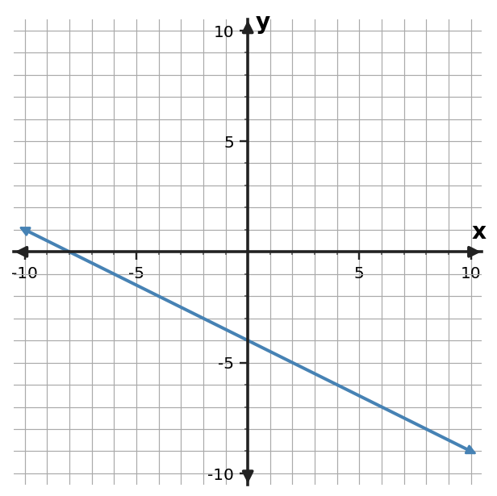
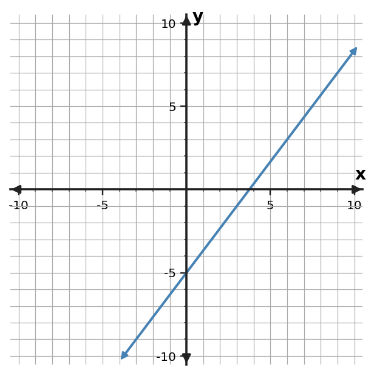

Algebra Practice 2.1
1. Find the slope of the line through $(2,7)$ and $(7,22)$.
2. Find the slope of the line through $(1,-5)$ and $(5,3)$.
3. Find the slope of the line through $(0,-3)$ and $(3,6)$.
4. Use the table to determine the constant rate of change in $y$ per 1 unit of $x$.
| $x$ | $y$ |
|---|---|
| $0$ | $10$ |
| $2$ | $8$ |
| $4$ | $6$ |
| $6$ | $4$ |
5. Use the table to determine the constant rate of change in $y$ per 1 unit of $x$.
| $x$ | $y$ |
|---|---|
| $0$ | $1$ |
| $2$ | $4$ |
| $4$ | $7$ |
| $6$ | $10$ |
6. Use the table to determine the constant rate of change in $y$ per 1 unit of $x$.
| $x$ | $y$ |
|---|---|
| $0$ | $-5$ |
| $2$ | $5$ |
| $4$ | $15$ |
| $6$ | $25$ |
7. Determine the slope of the line shown. Use two grid points to support your calculation.

8. Determine the slope of the line shown. Use two grid points to support your calculation.

9. Determine the slope of the line shown. Use two grid points to support your calculation.

10. A conveyor moves 21 meters in 3 seconds at a constant rate. What is the constant rate in meters per second?
11. A water pump moves 70 gallons in 5 minutes at a constant rate. What is the constant rate in gallons per minute?
12. A cyclist travels 42 miles in 3 hours at a constant rate. What is the constant rate in miles per hour?
13. On a coordinate plane, a line falls 2 units while moving right 3 units. Classify the slope as positive, negative, zero, or undefined.
14. Classify the slope of a line that is vertical.
15. Classify the slope of the horizontal line $y=5$.
16. A runner covers 6 miles in 0.5 hour. Jordan says the slope is 12 hours per mile. Correct the unit interpretation.
17. Two points are $(1,1)$ and $(4,16)$. A student computes $\frac{16-1}{1-4}$ and reports the slope as $-5$. Identify and repair the subtraction-order error.
18. A horizontal line through $y=-4$ is said to have undefined slope. Decide whether the stated slope type is correct.
19. The rule is $y=2x+3$. Complete the input-output values and name one ordered pair generated by the rule.
| Input $x$ | Output $y$ |
|---|---|
| $-1$ | $1$ |
| $0$ | $3$ |
| $2$ | $7$ |
20. The rule is $y=-x+5$. Complete the input-output values and name one ordered pair generated by the rule.
| Input $x$ | Output $y$ |
|---|---|
| $-1$ | $6$ |
| $0$ | $5$ |
| $2$ | $3$ |
21. The rule is $y=3x-2$. Complete the input-output values and name one ordered pair generated by the rule.
| Input $x$ | Output $y$ |
|---|---|
| $-1$ | $-5$ |
| $0$ | $-2$ |
| $2$ | $4$ |
22. Determine whether the table shows a constant rate of change. If it does, state the rate.
| $x$ | $y$ |
|---|---|
| $0$ | $1$ |
| $2$ | $5$ |
| $4$ | $9$ |
| $6$ | $13$ |
23. Determine whether the table shows a constant rate of change. If it does, state the rate.
| $x$ | $y$ |
|---|---|
| $0$ | $2$ |
| $1$ | $5$ |
| $2$ | $9$ |
| $3$ | $14$ |
24. Determine whether the table shows a constant rate of change. If it does, state the rate.
| $x$ | $y$ |
|---|---|
| $1$ | $10$ |
| $3$ | $6$ |
| $5$ | $2$ |
| $7$ | $-2$ |